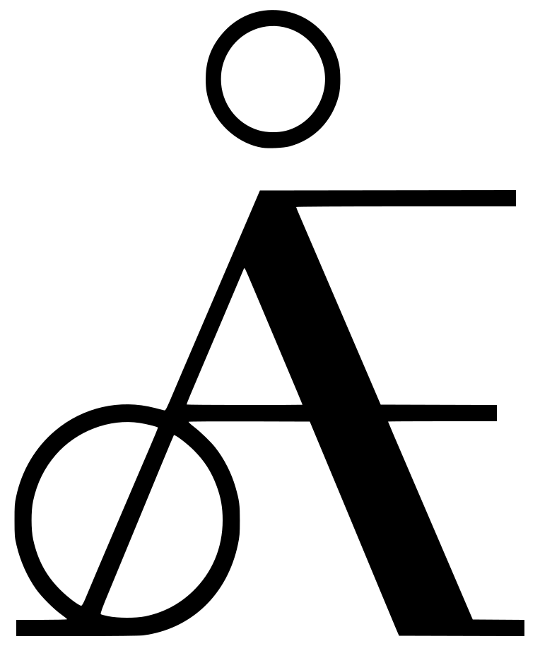

Hvorfor
Vi ønsker å lage en arena der språkteknologer kan snakke om faget sitt på norsk. Ved å samle fagmiljøet på norsk sikrer vi at det eksisterer et norsk fagspråk for språkteknologi, og publiseringen av alle sammendragene dokumenterer dette.
Konferansen finansieres av NORBRUK – senter for norsk fagspråk i bruk
